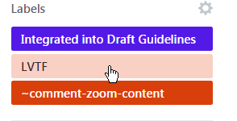
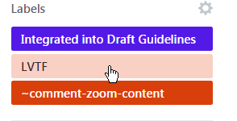
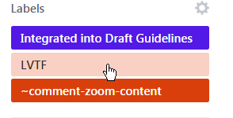

Examples
Example 1: Dismissable Tooltip
 


Additional content that appears and disappears in coordination with keyboard focus or pointer hover often leads to accessibility issues. Reasons for such issues include:
Examples of such interactions can include custom tooltips, sub-menus and other nonmodal popups which display on hover and focus. The intent of this success criterion is to ensure that authors who cause additional content to appear and disappear in this manner must design the interaction in such a way that users can:
There are usually more predictable and accessible means of adding content to the page, which authors are recommended to employ. If an author does choose to make additional content appear and disappear in coordination with hover and keyboard focus, this success criterion specifies three conditions that must be met:
Each of these is discussed in a separate section.
This SC covers content that appears in addition to the triggering component itself. Therefore, a non-visible component, like a Skip to Main link, that is made visible on keyboard focus (with no additional content beyond the trigger becoming visible) is not covered by the SC.
The intent of this condition is to ensure that the additional content does not interfere with viewing or operating the page's original content. When magnified, the portion of the page visible in the viewport can be significantly reduced. Mouse users frequently move the pointer to pan the magnified viewport and display another portion of the screen. However, almost the entire portion of the page visible in this restricted viewport may trigger the additional content, making it difficult for a user to pan without re-triggering the content. A keyboard means of dismissing the additional content provides a workaround.
Alternatively, low vision users who can only navigate via the keyboard do not want the small area of their magnified viewport cluttered with hover text. They need a keyboard method of dismissing something that is obscuring the current focal area.
Two methods may be used to satisfy this condition and prevent such interference:
For most triggers of relatively small size, it is desirable for both methods to be implemented. If the trigger is large, noticing the additional content may be of concern if it appears away from the trigger. In those cases, only the second method may be appropriate.
The success criterion allows for input error messages to persist as there are cases that require attention, explicit confirmation or remedial action.
The intent of this condition is to ensure that additional content which may appear on hover of a target may also be hovered itself. Content which appears on hover can be difficult or impossible to perceive if a user is required to keep their mouse pointer over the trigger. When the added content is large, magnified views may mean that the user needs to scroll or pan to completely view it, which is impossible unless the user is able to move their pointer off the trigger without the additional content disappearing.
Another common situation is when large pointers have been selected via platform settings or assistive technology. Here, the pointer can obscure a significant area of the additional content. A technique to view the content fully in both situations is to move the mouse pointer directly from the trigger onto the new content. This capability also offers significant advantages for users who utilize screen reader feedback on mouse interactions. This condition generally implies that the additional content overlaps or is positioned adjacent to the target.
The intent of this condition is to ensure users have adequate time to perceive the additional content after it becomes visible. Users with disabilities may require more time for many reasons, such as to change magnification, move the pointer, or simply to bring the new content into their visual field. Once it appears, the content should remain visible until:
title attribute in HTML as a small tooltip.
